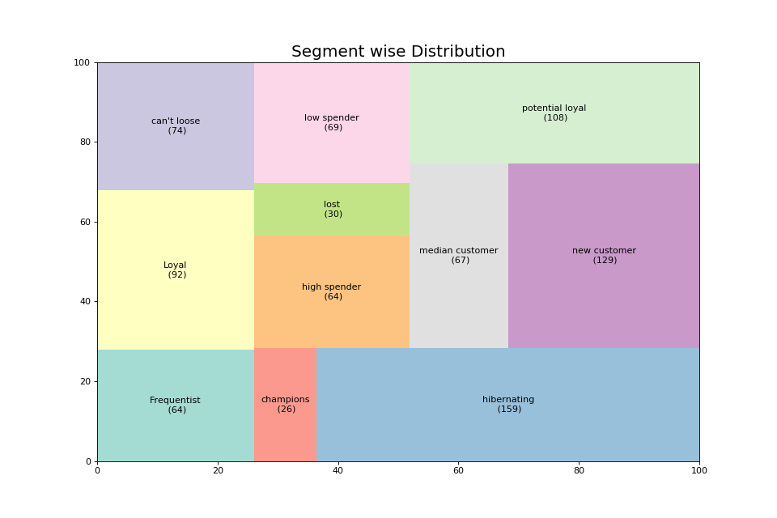

{% if data == "single_image" %}  {% elif data == "listimg" %}
{% elif data == "tabdata" %}
process df
{% else %}
THIS IS ANOTHER DF
{% endif %}


 {% elif data == "tabdata" %}
{% elif data == "tabdata" %}